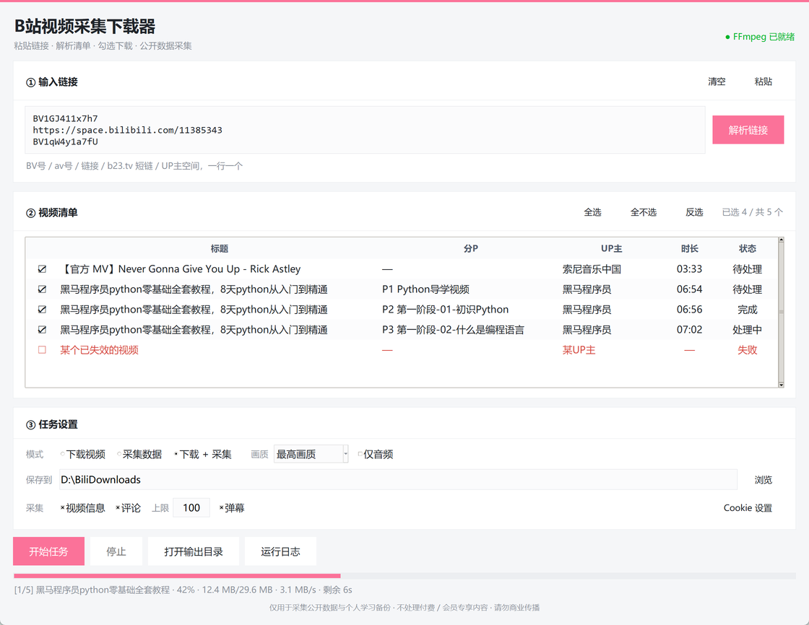

界面分三块：① 输入链接 → ② 视频清单（解析结果，可勾选） → ③ 任务设置。
使用者需自行遵守《著作权法》与 B 站用户协议，采集请保持克制频率。
BiliCrawler-1.1.0-Setup.exe，如弹出 UAC 提示请选「是」。
地址栏支持多种写法，一行一个，可以整段粘贴。
点「解析链接」后不会立刻下载——程序会先把每个链接展开成一条条具体的视频/分P，
列在下面的清单里，你确认无误再点「开始任务」。多P 视频、UP 主投稿都会在这里展开。
| 写法 | 说明 |
|---|---|
BV1GJ411x7h7 | BV 号，最常用 |
av80433022 | 旧版 av 号 |
https://www.bilibili.com/video/BV... | 完整链接，含 ?p=2 会自动识别分P |
https://b23.tv/xxxxx | 手机分享短链，自动跳转解析 |
https://space.bilibili.com/123456 | UP 主空间，自动拉取最近 60 个投稿 |
| 模式 | 产出 |
|---|---|
| 下载视频 | MP4 文件（H.264 + AAC），存到保存目录根下 |
| 采集数据 | JSON 文件，存到保存目录的 _采集数据 子目录 |
| 下载 + 采集 | 上面两份一起产出 |
最高画质 / 1080P / 720P / 480P / 360P，或「仅下载音频」。
B 站同一分辨率会给出 H.264、HEVC、AV1 三种编码，本工具固定优先 H.264，
因为它是兼容性最好的；AV1 体积小但很多播放器放不了。
安装时勾选了 FFmpeg 组件就不会出现。若跳过安装，可点界面右上角「未检测到 FFmpeg（点此获取）」自动补装。
B 站对未登录请求有限流。点「Cookie 设置」，从浏览器 F12 → Application → Cookies → SESSDATA 复制值粘贴进去即可。Cookie 只存在本机。
因为优先选了 H.264 高码率版本。想要小体积可在对应视频没有 H.264 时自动降级，或改用「仅下载音频」。
不会。视频存在你自己选的保存目录里，卸载只删程序本身。
点「解析链接」后它们会全部展开成清单里的一行行。清单里点最左边的 ☑ / ☐ 可以单独勾选，
标题右侧还有「全选 / 全不选 / 反选」三个快捷键。只有勾上的才会下载。
该视频已失效、被删除或需要登录才能看。这类条目不参与勾选，直接跳过即可，不影响其他条目。
粘贴 UP 主空间链接会自动展开最近 60 个投稿。翻页更深的列表目前需手动补充链接。
%LOCALAPPDATA%\BiliCrawler（仅 Cookie）